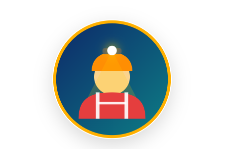
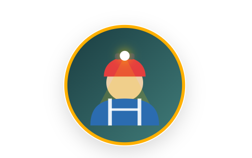

Wisata Susur Goa Ngerong sepenuhnya dikelola oleh masyarakat Desa Rengel Tuban, dan didukung oleh komunitas pemuda setempat. Supaya lebih yakin, yuk kenal lebih dekat dengan profil pemandu resmi kita yang akan menemani dan menjaga Anda selama petualangan berlangsung!

